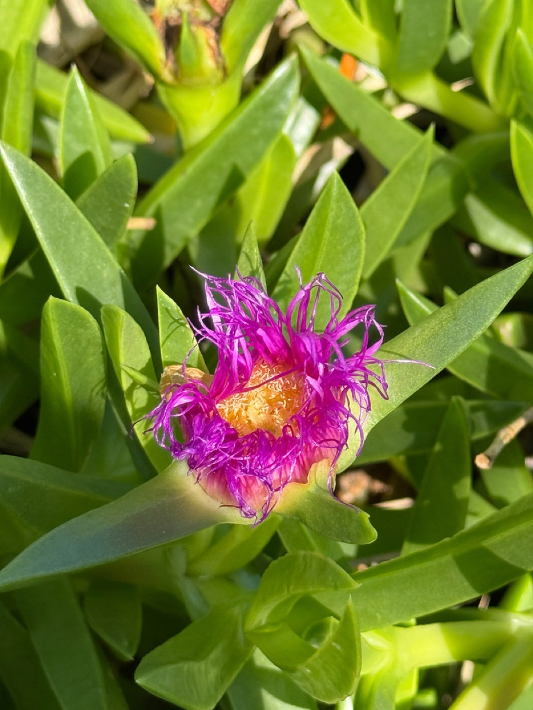

- The name "ice plant" has nothing to do with cold — it comes from the plant's own built-in sparkle. Specialized cells on the leaf surface, called epidermal bladder cells, swell with stored water and refract sunlight like tiny glass beads, giving the foliage a frosted glimmer even on the hottest day.
- C. edulis blooms bright yellow, then its petals slowly blush orange to pink as the flower ages — a built-in color timer you can read at a glance.
- Planted for decades as an erosion-control hero on California's coastal bluffs, it turned out to be the opposite: its roots are shallow, its leaves soak up enormous amounts of rainwater, and the sheer weight of a waterlogged mat can trigger landslides on steep slopes.
- A fierce dune colonizer on three continents — yet in Florida, its greatest enemy is ordinary irrigation. Wet, poorly drained soil invites root rot, and UF/IFAS recommends planting it only on sandy ridges kept well away from sprinkler systems.
Native to coastal South Africa. Planted worldwide for erosion control and as an ornamental succulent groundcover, it has become a serious invasive on coastlines in California, the Mediterranean, and Australia.
- Sea fig (Carpobrotus) is an iceplant relative built for the coast: long, trailing stems set with thick, three-sided, succulent leaves that store water and let it carpet harsh, sandy, salty ground. The flowers are large, glossy, and many-petaled — daisy-like — opening with the morning sun and closing again at night.
- The common name "ice plant" traces to a structural quirk shared across the Aizoaceae family: the leaf and stem surface is studded with epidermal bladder cells, enlarged translucent structures that store water and salt and refract sunlight like rows of glass beads, producing the characteristic frosty sparkle.
- Those same cells are part of how the plant copes with saline soils — offloading excess salt into the bladders keeps it out of the plant's metabolic machinery.
- The genus was planted widely for erosion control on California's coastal bluffs and highway cuts, but research revealed a bitter irony. Its roots are remarkably shallow for a plant so large, and its succulent foliage holds enormous volumes of water.
- During heavy rain, the sheer weight of a saturated mat on steep, sandy slopes increases the risk of slide and slope collapse — the very outcome it was planted to prevent.
- It is not currently listed as invasive in Florida, and the park's plant is identified at the genus level. It is worth admiring with that cautionary history in mind.
The large flowers offer nectar and pollen to bees and other insects, and the fruit is eaten by some animals in its native range. Against this, where it naturalizes it tends to smother native groundcovers, reducing overall habitat value.
A trailing, mat-forming succulent groundcover.
Large, glossy, many-petaled, daisy-like, in pink, magenta, or yellow; opening with the sun.
Fleshy, fig-shaped, and edible when fully ripe.
Thick, three-sided (triangular in cross-section), succulent, gray-green.
Year-round: sprawling, thick succulent stems creeping along the ground, gray-green to reddish. Pinch a leaf and examine the cut end — it will be sharply triangular, like a structural beam, not rounded.
In bloom (spring through summer): massive daisy-like flowers up to 3–4 inches across that open only in direct sun. Yellow flowers aging to orange-pink point to C. edulis; deep magenta-pink from the outset suggests C. chilensis or C. acinaciformis.
Late summer into fall: peer under the leaf mat for heavy, fleshy, yellow-green fruits — each one growing from the base of a spent flower.
The fig-shaped fruits are edible and tart, and traditionally made into jam in South Africa — but eat only a small amount: overconsumption can cause strong laxative effects. No other toxicity to people or dogs is known.
NOMENCLATURE: The genus Carpobrotus contains roughly 14 species, most endemic to southern Africa. The species most commonly seen in cultivation and in the invasive literature is C. edulis. C.
chilensis (sea fig) is also widely grown and, despite its species name, is thought to be native to southern Africa rather than South America — its common name reflects its naturalized presence along the Chilean and California coasts.
The sign input identifies this plant to genus only — verify the species with staff before finalizing this sign, as flower color is the fastest field ID: C. edulis flowers open distinctively yellow and age to orange or pink; C. acinaciformis and C. chilensis produce deep magenta-pink flowers from the outset.
FLORIDA CONTEXT: UF/IFAS (FPS109) notes that in Florida, root rot in irrigated landscapes is the greatest challenge for this plant, and recommends planting only on sandy ridges with excellent drainage away from irrigation. Carpobrotus does not appear on the FISC invasive plant list for Florida, though it is a serious dune invader on the U.S. West Coast and elsewhere.


- © jsea (CC-BY-NC), via iNaturalist
- © teschaim (CC-BY-NC), via iNaturalist
- © selenaycruz (CC-BY-NC), via iNaturalist